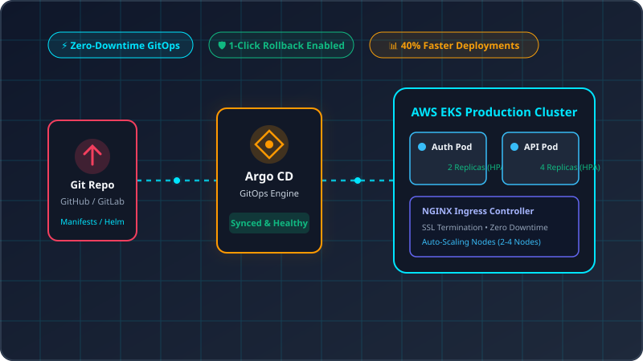
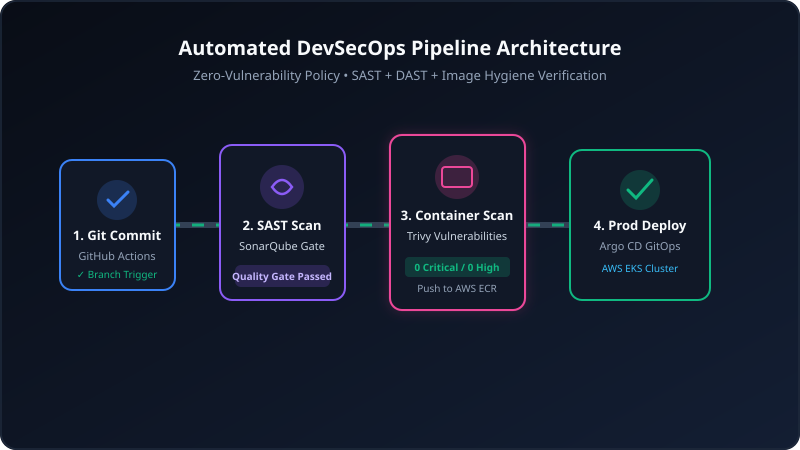
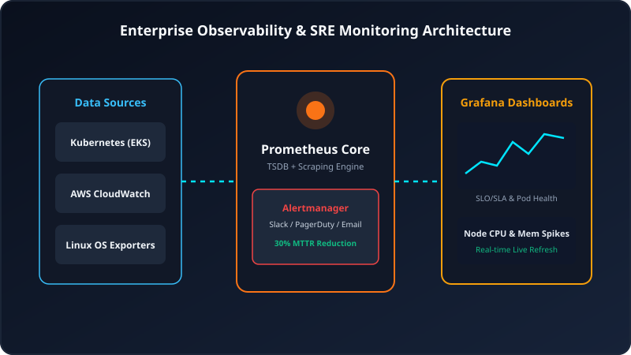
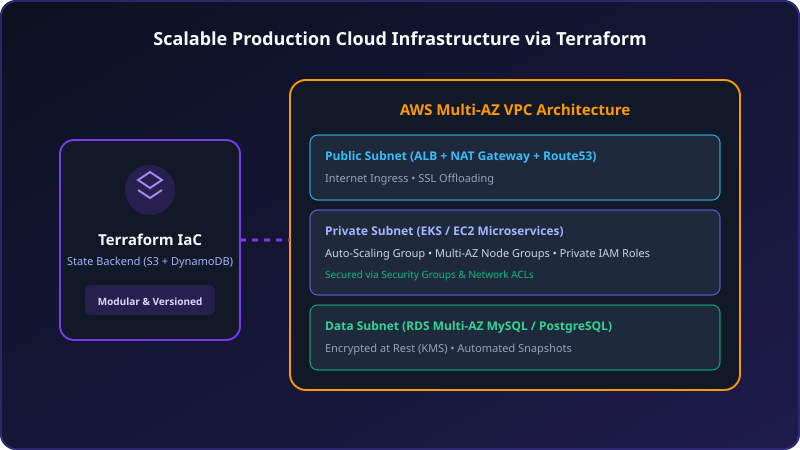

Results-driven DevOps Engineer with 2+ years of experience in Linux systems, cloud-native architecture, Kubernetes workloads (EKS), automated CI/CD pipelines, GitOps with Argo CD, and Infrastructure as Code with Terraform.
Bridging software development and high-availability cloud infrastructure with automation, security, and GitOps precision.
DevOps Engineer • AWS Certified Solutions Architect
I am a results-driven DevOps Engineer with 2+ years of professional experience managing Kubernetes workloads, provisioning cloud infrastructure via Terraform, and engineering automated CI/CD pipelines.
Designing multi-AZ AWS environments (EKS, EC2, RDS, VPC, ALB, IAM) with auto-scaling nodes, HPA, and NGINX Ingress controllers for thousands of daily requests.
Building declarative deployment workflows using Argo CD, Jenkins, and GitHub Actions to eliminate drift, accelerate releases by 40%, and allow 1-click rollbacks.
Enforcing security gates with SonarQube SAST, Trivy container vulnerability scanning, AWS IAM least-privilege policies, and Kubernetes RBAC hardening.
Full-stack monitoring with Prometheus, Alertmanager, Grafana real-time SLO dashboards, and CloudWatch — achieving a 30% reduction in MTTR.
A comprehensive view of the tools, cloud platforms, and methodologies I leverage daily to engineer production reliability.
Click on any pipeline stage to inspect the automated quality gates, security scans, and deployment mechanisms.
Track record of building, optimizing, and maintaining mission-critical cloud infrastructure and automation systems.
Explore high-impact DevOps architectures designed for enterprise scale, zero downtime, and robust security.

Architected a declarative deployment engine utilizing Argo CD and AWS EKS. Synchronizes infrastructure manifests directly from Git, enabling automatic drift correction, zero-downtime blue/green releases, and instant one-click rollback.

Engineered a comprehensive continuous integration and security pipeline combining SonarQube static code analysis, Trivy container image scanning, and automated multi-environment promotion gates.

Constructed an end-to-end monitoring ecosystem with Prometheus metric scrapers, Alertmanager rules routing to PagerDuty/Slack, and dynamic Grafana dashboards for microservice SLOs and cluster resource health.

Designed modular Infrastructure as Code blueprints for multi-AZ VPCs, public/private subnets, Application Load Balancers, Multi-AZ RDS MySQL, and strict IAM least-privilege policies.
Industry-recognized professional cloud certification and higher academic qualifications in Computer Science.
Validates advanced technical skills in designing distributed applications, multi-AZ high availability, cost optimization, multi-account security, and disaster recovery.
Comprehensive mastery in leveraging Autonomous AI Agents, LLM-powered CI/CD automation, AI-driven SRE troubleshooting, prompt engineering for DevOps, and intelligent cloud operations.
Have a project, role opening, or infrastructure challenge? Feel free to reach out directly or drop a message below.
I'm currently based in Pune, Maharashtra and open to both on-site and remote DevOps / Cloud engineering opportunities.
Fill in the form below and I will respond to your inquiry within 24 hours.